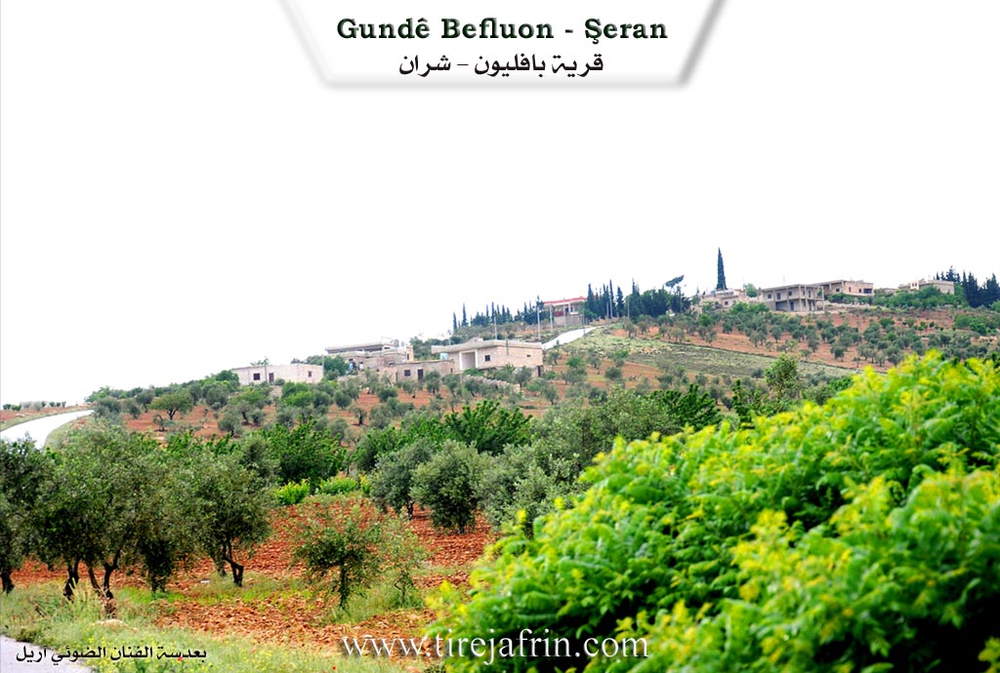
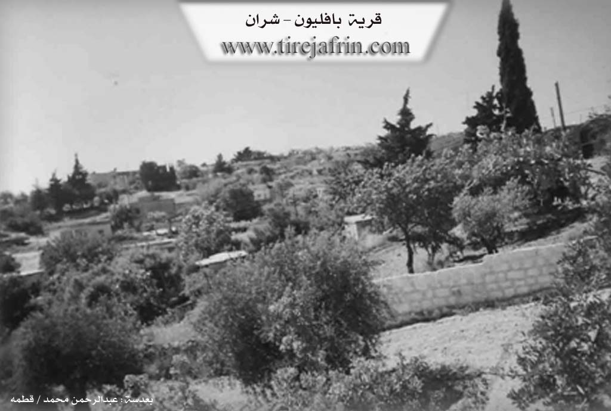

General Information
Nahiya
Şera
Also Known As
Bafilonê, Bafliun, Baflunê, Baflûnê, بافليون
Families / Clans
Evdê Seydo, Henan Evdo, Malê Betê, Malê Dewrêş, Malê Ebdî Ûfê, Malê Hecî Husê, Îbrahîmê Elî Kûrê

Location
Photos


Foundation & Origin
Among its most important families is the Ibrahim Ali Kor family, who are the first inhabitants of the village.
Source: TirejAfrin Site
According to oral tradition, the village was established by two cousins, Ibrahim and Hanan, who were shepherds from the village of Qitmê. They fled persecution from Islamic authorities and settled in the area, then known as Xerabê Baflunê (the Ruins of Baflunê), taking refuge in its ancient caves.
Source: Ax û Walat Transcript
Name Meaning
It is believed that "Baflun" is a Syriac name.
Source: TirejAfrin Site
Summaries
I. Summary from TirejAfrin Site (English) of Baflûnê
According to the book 'جبل الكرد' 'Mountain of the Kurds (Afrin) geographical study' by Dr. Mohammed Abdo Ali:
Baflûnê, Bafliun (بافليون) /602n - 157ha - 13km - 770m/:
- It is believed that "Baflun" (بافلون) is a Syriac name.
- A small village located in a strategic position. Its air is healthy due to the elevation of its location, and it was a summer resort for some notables of the region. Near it are remains of a British camp for oil exploration from the fifth decade of the twentieth century. ==A stone-paved road leads to it from east of Qatma village dating back to that period and still in good condition.==
According to the book Afrin... Her River and Green Hills:
Bafliun (بافليون): A village in the Afrin (جبل الكرد), belonging to Sharran District (ناحية شران), Afrin Region (منطقة عفرين), Aleppo Governorate (محافظة حلب).
It is a small village located in the eastern part of the Afrin Region and north of Sam'an Mountain (جبل سمعان) on a high mountain elevation and in a strategic defensive position. It is bordered to the north by mountain elevations planted with olive and vine trees and remains of British company buildings from the forties and Jamanli (جمانلي) and Omranli (عمرانلي) and Sinkarli (سنكرلي) villages, to the south by a stream and slope heading south and lands of Qatma village (قرية قاطمة) and Aleppo-Meydan Ekbas railway (سكة حديد حلب - ميدان اكبس), to the west by deep stream and mountain elevations planted with olive and forest trees and Qatma village (قرية قاطمة), and to the east by slope and stream and mountain elevations and rugged terrain planted with olive and forest trees and Sheikh Hamid shrine (مزار شيخ حميد) and Qastal Jindo village (قرية قسطل جندو) and Azaz city (مدينة إعزاز).
The number of its houses reaches approximately ==55 houses== and its age is 103 years, meaning it was ==established in 1903== (1903م). Its old houses are stone-clay with flat wooden roofs and the modern ones are concrete spread to the south and west. The inhabitants work in olive and grain cultivation in addition to raising sheep and goats. Electricity network and drinking water from artesian well from al-Malikiya village (قرية المالكية) are available. It has an elementary school and telephone from Qatma telephone center and a recently paved road to the village center connecting to Qatma village and Qastal Jindo (قسطل جندو), and it is administratively subordinate to Qatma Town.
Among its most important families is the Ibrahim Ali Kor family (عائلة إبراهيم علي كور), who are the first inhabitants of the village. Its population according to civil registry dated 31/12/2004 is (593 people).
Village Mayor: Abdo Saydo Saydo (عبدو سيدو سيدو)
II. Summary of Baflûnê from Ax û Welat
Summary of Baflûnê from Ax û Welat
Source: https://www.youtube.com/watch?v=G2CbtBUzOWY
The village of Baflûnê, situated in the Şera district of Çiyayê Kurmênc, stands at an altitude of approximately 700 meters. The current settlement was founded between 150 and 200 years ago by two cousins named Ibrahîm and Henan. These founders migrated from the nearby village of Qitmê, located just five kilometers away. According to village elders, they sought refuge in this mountainous location to escape religious persecution and preserve their Êzdî faith. Prior to their arrival, the site was known as xirabê Baflûnê, indicating that it had been inhabited and subsequently ruined in earlier historical eras.
The population of Baflûnê is entirely Êzdî. Following the initial establishment by the lineages of Îbrahîmê Elî Kûrê and Henan Evdo (also identified as Evdê Seydo), the community expanded with the arrival of other families. These include Malê Hecî Husê, Malê Dewrêş, Malê Betê, and Malê Ebdî Ûfê. Elders note that some of these later groups arrived from Sînko. The village grew to contain approximately 70 to 80 households, with residents primarily engaging in agriculture and the cultivation of olive trees.
A distinctive feature of Baflûnê is the presence of numerous ancient caves and rock cut cisterns. Villagers estimate there are around 15 caves in the vicinity, with several located within the village itself. These caves played a crucial role in the survival of the community during times of instability. Residents describe a historical defense system where ropes connected the caves; if bandits or threats were detected, a rope would be pulled to ring bells inside neighboring caves, alerting the entire community to take defensive positions. One particular ancient cistern is named Gulê Selmo, honoring a local woman responsible for its maintenance.
The documentary focuses heavily on the preservation of Êzdî cultural traditions, specifically the celebration of Cejna Xidir Êlyas. A central custom discussed is the preparation of Pêxûn, a mixture of seven roasted and ground grains including wheat, barley, chickpeas, and lentils. This mixture is heavily salted and consumed by unmarried youth before they sleep. Tradition holds that they must not drink water after eating it; instead, they hope to dream of a person offering them water, whom they believe will be their future spouse. The program concludes with a villager singing the epic ballad of Derwêşê Evdî, further rooting the village in the oral history of the region.
Links & Transcripts
### III. Transcripts
- Baflûnê_Ax û Welat_1
### V. Links
Tirejafrin:
http://www.tirejafrin.com/site/kura%20afrin%20%20sheran%20-%20baflun.htm
Ax û Welat:
https://www.youtube.com/watch?v=dGLEmMYblgo
https://www.youtube.com/watch?v=G2CbtBUzOWY